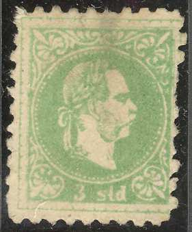
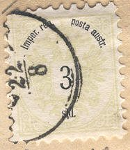

Return To Catalogue - Austria overview - Turkey - Austrian Post Offices in the Turkish Empire, part 2
Note: on my website many of the
pictures can not be seen! They are of course present in the
catalogue;
contact me if you want to purchase the catalogue.
Austria had 120 post offices (or agencies) in the Turkish Empire (or Levant); for example in Constantinopel, Beirut, Jaffa, Jerusalem, Kerassunde etc. For more information see also: http://stamps.endfield.org.uk/ahpos.htm.
2 s yellow 3 s green 5 s red 10 s blue 15 s brown 25 s violet 50 s brown (larger size)
All these stamps (except the 10 s and 15 s) are worth considerably more in cancelled condition than uncancelled. Forged cancels exist!
Value of the stamps |
|||
vc = very common c = common * = not so common ** = uncommon |
*** = very uncommon R = rare RR = very rare RRR = extremely rare |
||
| Value | Unused | Used | Remarks |
| 2 s | c | *** | |
| 3 s | * | *** | |
| 5 s | * | ** | |
| 10 s | R | c | |
| 15 s | ** | ** | |
| 25 s | * | R | |
| 50 s | ** | R | |
Envelope with the same design:

These envelopes exist in the values 3 sld green, 5 sld red, 10 sld blue, 15 sld brown and 25 sld violet. Furhermore a postcard with "4 soldi" (red) should exist (but I've never seen it).
I've seen stamps with forged cancels (cancelled stamps are often more valuable for this issue). For example a 2 Sld yellow stamp, with a forged 'SALO' cancel (probably part of 'SALONICI').

Forged 'ALEXANDRIEN' cancels on two 25 s stamps

Rather primitive forgeries of the 3 sld and 10 sld stamps

Forgery with printed perforation. This forgery is identical to
the image provided in the John Edward Gray 'The Illustrated
Catalogue of Postage Stamps' of 1870 (page 6). The catalogue of Placido Ramon de Torres "Album
Illustrado para Sellos de Correo" of 1879 also has the same
image on page 47! (information passed to me thanks to Gerhard
Lang, 2016).
Value in "Sld.", inscription "Imper. reg. posta austr.":




2 s brown 3 s green 5 s red 10 s blue 20 s grey 50 s lilac Overprinted in "PARA"

'10 PARA 10' on 3 s green

'10 PARA 10' on 3 k green '20 PARA 20' on 5 k red '1 PIASTER 1' on 10 k blue '2 PIASTER 2' on 20 k grey '5 PIASTER 5' on 50 k lilac
Value of the stamps |
|||
vc = very common c = common * = not so common ** = uncommon |
*** = very uncommon R = rare RR = very rare RRR = extremely rare |
||
| Value | Unused | Used | Remarks |
| 2 s | c | *** | |
| 3 s | * | *** | |
| 5 s | * | *** | |
| 10 s | *** | * | |
| 20 s | ** | *** | |
| 50 s | ** | *** | |
Surcharged |
|||
| 10 pa on 3 s | c | ** | |
| 10 pa on 3 k | * | ** | |
| 20 pa on 5 k | * | ** | |
| 1 pi on 10 k | *** | c | |
| 2 pi on 20 k | * | ** | |
| 5 pi on 50 k | *** | *** | |
Austrian Post Offices in the Turkish Empire, part 2
{kind=link}